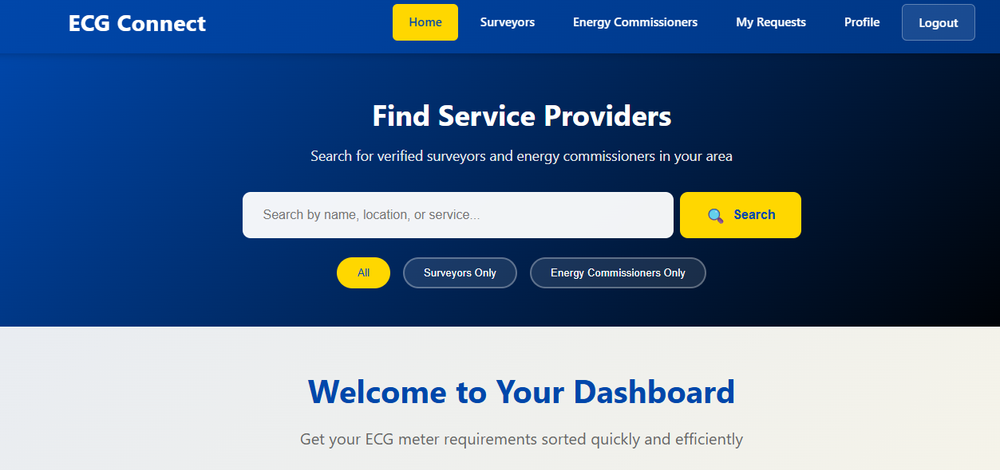

Personal Projects

ECG CONNECT
Developer | Nov 2025 – Present
- Built a digital platform unifying meter acquisition requirements, improving availability and visibility by over 70%.
- Projected a 30% increase in revenue for surveyors and energy commissioners through improved visibility.
- Reduced fraud in meter acquisition by over 70% through strict verification processes.

ScoutMe – Mobile Talent Discovery Platform
Developer | Sept 2025 – Present
- Developed a mobile-based platform enabling African footballers to showcase verified profiles and performance videos.